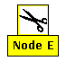
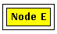

Tutorial Exercise 3.2: Using Abstractions to simplify a Layout
Interactive abstractions are used to hide particular parts of a graph that may be uninteresting or confusing at the moment. Abstractions are temporary operations that can be undone at any time. Select some node in the graph that has at least one child node. Now you can hide the subgraph of this node by selecting menu Abstraction/Hide Subgraph. After doing so, the children of the node are removed from the visualization and the selected node is drawn with an icon showing a pair of scissors to emphasize the applied abstraction:
 Node with a hidden subgraph
You can restore the subgraph of the selected node by using menu Abstraction/Show Subgraph. Make sure to select a node with a hidden subgraph, otherwise the show operation is not available. Try to hide three or four large subgraphs. You can see that the position of the other nodes is not affected by this operation, to reserve the space until the subgraph is shown again. So maybe a lot of unused space is present in the visualization after hiding some subgraphs. Take advance of this space by selecting menu Layout/Improve Spacing which gives you in a more compact layout. Now you can restore the original layout by using menu Layout/Restore all Subgraphs to restore all subgraphs in one step. Because the place of the subgraphs is occupied after compactification, the layout may not look as it looked before applying the abstractions, but with the incremental graph layout that is automatically applied when fading in subgraphs you will get a quite reasonable layout.
Another abstraction is hiding all the edges of a selected node: both the incoming (from the parent nodes) and the outgoing edges (to the child nodes). The three operations for edge abstractions are also available in the Abstraction menu. After hiding the edges of a selected node, they are removed from the graph visualization and the node is drawn with a rectangular border to emphasize the applied abstraction:
 Node with hidden edges
In opposition to subgraph abstractions, applying an edge abstraction has no effect on the position of nodes and edges, so you can use it at any time without worrying about losing your layout.End of Exercise 3.2. Go back to the Section 3 Overview.